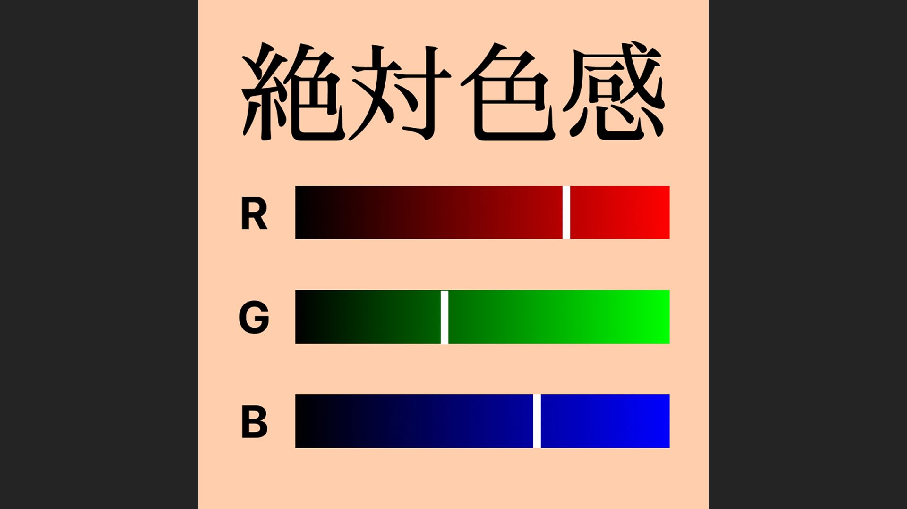

カラーマッチング
5ラウンド制
AbsoluteColor - 絶対色感
ランダムに提示されるお題の色を、RGBスライダーで再現する色合わせゲームです。制限時間内に色を調整し、全5ラウンドの結果を目指します。

ダウンロード
実行ファイルはありません。
作品の要点
ゲームの特徴
見本色を観察し、RGB値を調整して近い色を作る5ラウンド制のゲームです。
プレイの流れ
スライダー調整、時間内の回答、色差に応じた判定を5回繰り返します。
技術構成
Unity 6 / C#、URP、UI Toolkitを使用。コルーチンでラウンドを進行し、色差から結果を算出します。
ゲーム概要
AbsoluteColorは、ランダムに提示されるお題の色をRGBスライダーで再現する、全5ラウンドのカラーマッチングゲームです。赤・緑・青の値を調整色のプレビューで確かめながら、制限時間内に回答します。各ラウンドの色差に基づく判定・得点を確認し、最後に総合結果を振り返ります。
- ホーム画面には、ゲーム開始前に色調整を試せるRGBプレビューがあります。
- 各ラウンドで見本色をランダムに生成。制限時間は初回15秒で、次ラウンドごとに前のラウンドの0.9倍になります。
- 時間切れは失敗画面に切り替わるのではなく、その時点のRGB値を回答として採点します。
ゲーム進行とデータの流れ
入力から採点、結果表示までをひとつのラウンドとして順に処理し、結果の確認後に次のラウンドへ進みます。
01 — お題を提示
GameManagerがラウンドを開始し、ランダムなRGB値から見本色を作ります。
02 — RGBを調整
UI Toolkitのスライダー操作で回答色を更新し、プレビューへ反映します。ホームにもプレイ前のRGBプレビューがあります。
03 — 回答・採点
決定または時間切れで現在の値を回答色として確定し、見本色とともに結果データへ渡します。
04 — 結果を確認
判定演出とラウンド結果を表示し、「次へ」の入力で待機中の進行を再開。5ラウンド後に総合結果を表示します。
技術的な見どころ
入力から採点までのデータ経路
RGBスライダーの値を回答色とプレビューに同期し、見本色と回答色をResultDataとして扱います。各チャンネルの平均絶対差を色差として、判定・割合・得点を算出し、ラウンド結果と総合結果につなげます。
コルーチンで5ラウンドを制御
GameManager.GameLoop()がラウンド開始、制限時間内の回答待ち、採点、結果表示、次へ進む入力待ちを逐次実行します。決定と時間切れは同じ採点経路へ合流し、時間を含むゲーム進行を追いやすくしています。
編集データをScriptableObjectへ
ColorChannelDataSOに色チャンネルの表示・素材情報、AudioDataSOにタグとBGM／SEクリップを管理します。対応する素材や音声の差し替えは、ゲーム進行ロジックから分けてInspectorで編集できます。
判定を表示・音・画面演出へ
結果処理が作ったデータを判定UIやラウンド表示へ受け渡します。判定に応じてテキスト、効果音、Cinemachineのカメラ揺れ、Bloom／Vignette、アニメーションやパーティクルを連携させます。
UIモジュールと2シーン構成
HomeSceneとGamePlaySceneを使い、UI Toolkitの共通モジュール基底とホーム／ゲーム画面の管理クラスを構成。判定テキストなど一部にはTextMesh Proも利用します。
Unityroomランキング連携
最終結果からUnityroomクライアントを呼び出す処理を入れています。Unityroom上でのランキング送信の動作確認は、まだ十分に行えていません。
色差と得点の考え方
回答色と見本色について、R・G・Bそれぞれの絶対差を平均して色差を求め、色差に応じた評価と得点へ変換します。現行の色差は知覚色差ではなく、RGB各チャンネルを同じ重みとして扱う指標です。色の見え方や色空間の差を補正したものではありません。
difference = (|Ranswer - Rtarget|
+ |Ganswer - Gtarget|
+ |Banswer - Btarget|) / 3現在の課題と今後の改善案
現在の実装の構成上の特徴と、今後直したい点をまとめます。
小さな逐次ゲームに合わせた進行
全5ラウンドの直列フローをコルーチンで記述し、結果を見ている間は次ラウンドを待機させています。途中キャンセルや並行して進む処理を追加する場合は、状態管理を見直したいと考えています。
編集可能なデータの範囲
色モード情報や音声クリップはScriptableObjectに分けています。新しい採点方式やモード固有の動作はデータだけでは追加できず、コードの変更が必要です。
採点まわりの課題
Bランクの条件がCランクより先に判定されるため、Cランクに到達できません。MaxScoreを基準値として使う意味も整理できていません。判定順を直し、境界値のテストを追加したいと考えています。
イベントと依存関係の改善
履歴ボタンなどのイベントの登録・解除に不具合の可能性があり、シングルトンやシーン上の参照にも依存しています。画面を再初期化したときのイベント処理を見直し、必須の参照が欠けたときに気づけるようにしたいと考えています。
性能・対応環境の確認
Mobile向けの描画設定は用意していますが、実機ごとのフレーム時間・メモリや、画面サイズごとの操作感は確認していません。Profilerでの計測も行っていません。
自動テスト・永続化の範囲
プロジェクト用のテストコードやCI設定はなく、履歴や設定をアプリ再起動後も保持する仕組みも入れていません。色差・得点・ランクの境界値テストの追加と、履歴の保存を今後の改善案としています。